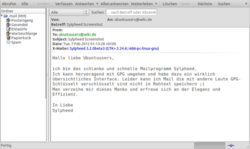

Sylpheed
Dieser Artikel wurde für die folgenden Ubuntu-Versionen getestet:
Ubuntu 16.04 Xenial Xerus
Ubuntu 14.04 Trusty Tahr
Zum Verständnis dieses Artikels sind folgende Seiten hilfreich:
Sylpheed  ist ein kleiner und ressourcensparender E-Mail-Client, der unabhängig von der verwendeten Desktop-Umgebung ist und auf der Grafikbibliothek GTK+ basiert. Die erste Version von Sylpheed wurde am 24.12.2004 vom Hauptentwickler Hiroyuki Yamamoto veröffentlicht, wobei die Prioritäten innerhalb von Sylpheed bis heute gleich geblieben sind: Stabilität und einfache Konfiguration.
ist ein kleiner und ressourcensparender E-Mail-Client, der unabhängig von der verwendeten Desktop-Umgebung ist und auf der Grafikbibliothek GTK+ basiert. Die erste Version von Sylpheed wurde am 24.12.2004 vom Hauptentwickler Hiroyuki Yamamoto veröffentlicht, wobei die Prioritäten innerhalb von Sylpheed bis heute gleich geblieben sind: Stabilität und einfache Konfiguration.
Sylpheed beherrscht trotz seiner Schlankheit alle Features, die ein modernes E-Mail-Programm mit sich bringen muss (POP3, SMTP, IMAP, Newsgroups, Spamfilter, Verschlüsselung, Ordnerhierachien usw.) und ist das Standard-E-Mail-Programm von Lubuntu.
Aus Sylpheed ist eine Abspaltung (Fork) namens Claws Mail hervorgegangen, welche durch Plugins erweiterbar ist und inzwischen unabhängig von einem anderen Team entwickelt wird.
Hinweis:
Die Entwickler verzichten bewusst auf eine HTML-Unterstützung. HTML-Mails werden in reine Text-Mails umgewandelt, siehe offizielles FAQ (Abschnitt 1.14)  .
.
Installation¶
Sylpheed kann über folgende Pakete aus den Paketquellen installiert [1] werden:

sylpheed (universe [2])
sylpheed-i18n (universe, Sprachunterstützung)
 mit apturl
mit apturl
Paketliste zum Kopieren:
sudo apt-get install sylpheed sylpheed-i18n
sudo aptitude install sylpheed sylpheed-i18n
Deutsche Rechtschreibprüfung nachinstallieren¶
Möchte man die Rechtschreibprüfung in deutscher Sprache benutzen, so kann es nötig sein folgende Pakete zu installieren:
libaspell-dev (universe)
aspell-de (universe)
mit apturl
Paketliste zum Kopieren:
sudo apt-get install libaspell-dev aspell-de
sudo aptitude install libaspell-dev aspell-de
Manuelle Installation¶
Will man die aktuellste Version von Sylpheed benutzen, muss man den Quellcode von der offiziellen Webseite  herunterladen, entpacken und kompilieren [3].
herunterladen, entpacken und kompilieren [3].
Dazu müssen folgende Pakete aus den Paketquellen installiert sein:
libgtk2.0-dev
libsylph1 (ab Ubuntu 9.04)
mit apturl
Paketliste zum Kopieren:
sudo apt-get install libgtk2.0-dev libsylph1
sudo aptitude install libgtk2.0-dev libsylph1
Will man seine E-Mails mit GnuPG verschlüsseln, müssen vor der Installation aus dem Quellcode weitere Pakete installiert werden:
libgpgme11
libgpgme11-dev
mit apturl
Paketliste zum Kopieren:
sudo apt-get install libgpgme11 libgpgme11-dev
sudo aptitude install libgpgme11 libgpgme11-dev
Konto erstellen¶
Um ein neues Konto zu erstellen, geht man auf "Einstellungen -> Neuen Account erstellen...". Jetzt öffnet sich das Fenster "Account bearbeiten/einrichten". Nun wählt man zuerst einen Namen für den Account und gibt danach seine E-Mail-Adresse an. Unter "Serverdaten" kann man jetzt einstellen, ob es sich um ein Konto für POP3, IMAP, NNTP oder Unix-Mail handeln soll. Dementsprechend gibt man dann seine Kontodaten ein.
Hinweis:
Die Zugangsdaten (Passwörter) werden im Klartext in der Datei ~/.sylpheed-xx/accountrc gespeichert.
Will man Einstellungen für einen Account nachträglich bearbeiten, erreicht man dieses Fenster jederzeit wieder über "Einstellungen -> Accounts bearbeiten (dann wählt man den Account aus) -> Bearbeiten".
Signatur¶
Will man seine E-Mails mit einer Signatur oder Unterschrift versehen, wählt man im Fenster "Account bearbeiten/einrichten" des Kontos den Tab "Verfassen". Danach dann eine Unterschrift entweder aus einer Textdatei wählen oder manuell angeben.
Mail-Import aus anderen Programmen¶
Da der Mail-Import unter Sylpheed komplett identisch mit dem unter Claws Mail ist, wird hier nur auf den zugehörigen Artikel verwiesen: Claws Mail.
Spam-Filter¶
Sylpheed unterstüzt von Haus aus mit Bogofilter einen sehr mächtigen Spam-Filter. Der Vorteil von Bogofilter liegt darin, dass der Filter komplett individuell abstimmBAR ist und so (nach einigem Training) eine sehr hohe Erkennungsrate (weit über 90%) besitzt. Dazu muss dieser erst aus den Paketquellen installiert [1] werden:
bogofilter
mit apturl
Paketliste zum Kopieren:
sudo apt-get install bogofilter
sudo aptitude install bogofilter
| Option | Spam-FilterBefehl |
| Spam | bogofilter -s -I |
| Kein Spam | bogofilter -n -I |
| Klassifizier-Befehl | bogofilter -I |
Jetzt geht man in Sylpheed auf "Einstellungen -> Allgemeine Einstellungen... -> Spam-Mail" und setzt den Haken bei "Aktiviere Spam-Mail Kontrolle". Nun wählt man unter "Befehle zum Lernen:" die Option "Bogofilter" aus. Sollten die Optionen nicht bereits automatisch richtig gesetzt werden, kann man sie der Tabelle entnehmen.
Jetzt nur noch auf "Anwenden" klicken und Sylpheed ist bereit, um Spam-Mails zu filtern.
Dies funktioniert aber nicht anhand irgendwelcher dubiosen Filter-Listen, sondern man muss den Spam-Filter erst trainieren. Immer wenn man eine E-Mail bekommt, die Spam enthält, macht man einen Rechtsklick ( ) auf sie und wählt: "Markiere als Spam-Mail". Diese E-Mail wird daraufhin in den Spam-Ordner verschoben und der Spam-Filter hat dazu gelernt. Anhand bestimmter Kriterien wird er in Zukunft solche und ähnliche Mails ausfiltern. Wird aus Versehen fälschlich eine Mail automatisch in den Spam-Ordner geschickt, macht man erneut einen Rechtsklick und wählt: "Markiere als Nicht-Spam-Mail". Der Filter wird solche Mails dann nicht mehr als Spam erkennen.
) auf sie und wählt: "Markiere als Spam-Mail". Diese E-Mail wird daraufhin in den Spam-Ordner verschoben und der Spam-Filter hat dazu gelernt. Anhand bestimmter Kriterien wird er in Zukunft solche und ähnliche Mails ausfiltern. Wird aus Versehen fälschlich eine Mail automatisch in den Spam-Ordner geschickt, macht man erneut einen Rechtsklick und wählt: "Markiere als Nicht-Spam-Mail". Der Filter wird solche Mails dann nicht mehr als Spam erkennen.
E-Mails verschlüsseln mit GnuPG¶
Um E-Mails zu verschlüsseln, benötigt man zuerst einen eigenen Schlüssel und den öffentlichen Schlüssel des Empfängers in seiner GnuPG-Konfiguration [4].
Es gibt zwei Arten von Einstellungsmöglichkeiten: Allgemeine und Account-spezifische.
Allgemein¶
Die allgemeinen Einstellungen können über "Einstellungen -> Allgemeine Einstellungen... -> Privat" erreicht werden. Interessant sind zum einen die Option "Prüfe digitale Unterschrift automatisch", die (wenn aktiviert) direkt unter einer mit PGP signierten Mail anzeigt, ob die Signatur intakt ist und zum anderen die Option "Mantra zeitweise speichern". Diese Option speichert das Passwort eines Schlüssels für die ausgewählte Minutenanzahl, wobei 0 unendlich bedeutet.
Account-spezifisch¶
Die kontenspezifischen Einstellungen zum Verschlüsseln erreicht man über "Einstellungen -> Accounts bearbeiten -> Bearbeiten -> Privat ". Hier kann man unter anderem einstellen, was für ein Schlüssel für ein Konto benutzt werden soll. "Wähle Schlüssel nach E-Mail-Adresse" bedeutet, dass ein Konto den Schlüssel benutzt, der mit der E-Mail-Adresse des Kontos erstellt worden ist. Unter "Schlüssel manuell eingeben" kann man einen anderen auswählen.
Außerdem kann man hier noch einstellen, ob automatisch auf signierte und/oder verschlüsselte E-Mails ebenfalls signiert und/oder verschlüsselt geantwortet werden soll.
E-Mail verschlüsselt/signiert absenden¶
Dies funktioniert denkbar einfach. Man setzt einfach die Haken im Fenster, in dem man die E-Mail verfasst, bei "Verschlüsseln" und/oder "Signieren" und wird beim Absenden dann nach dem Passwort des Schlüssels gefragt. Existieren diese Checkboxen nicht, bedeutet das, dass entweder Sylpheed ohne GnuPG-Support kompiliert wurde (siehe oben unter Manuelle Installation) oder dass GnuPG nicht installiert ist.
Problembehebung¶
Öffnen von Attachments ohne Funktion¶
Falls beim Öffnen von Attachments nichts passiert, kann dies mit der Zuordnung von MIME-Typen zum gewünschten Anwendungsprogramm behoben werden. Im Homeverzeichnis wird mit einem Editor[5] eine Datei ~/.mailcap mit folgendem Inhalt erstellt:
# ~/.mailcap # Lubuntu image/*; gpicview '%s' application/pdf; evince '%s' video/mpeg; gnome-mplayer %s video/*; gnome-mplayer %s text/html; leafpad %s application/msword; abiword %s # LibreOffice application/vnd.oasis.opendocument.spreadsheet; libreoffice %s application/vnd.oasis.opendocument.text; libreoffice %s application/vnd.oasis.opendocument.presentation; libreoffice %s application/vnd.oasis.opendocument.graphics; libreoffice %s application/vnd.oasis.opendocument.formula; libreoffice %s
Dieses Beispiel ist für Lubuntu, bei anderen Ubuntu-Varianten ist die Datei entsprechend anzupassen. Die Syntax ist:
# ~/.mailcap MIME_TYP; ANWENDUNG %s
Ins Benachrichtigungsfeld minimieren¶
Sylpheed bietet über "Allgemeine Einstellungen -> Details -> Benutzerschnittstelle" die Möglichkeit, sich auf Wunsch als Symbol in das Benachrichtigungsfeld (System-Tray) zu minimieren. Allerdings erfolgt das Aktivieren dieser Aktion nicht wie bei anderen Programmen üblich über die Schaltfläche "Schließen", sondern über "Minimieren". Bevorzugt man ein einheitliches Verhalten, deaktiviert man dieses Verhalten in den Einstellungen und kombiniert den Programmaufruf mit AllTray.
 Übersicht
Übersicht- Erstellt mit Inyoka
-
 2004 – 2017 ubuntuusers.de • Einige Rechte vorbehalten
2004 – 2017 ubuntuusers.de • Einige Rechte vorbehalten
Lizenz • Kontakt • Datenschutz • Impressum • Serverstatus -
Serverhousing gespendet von